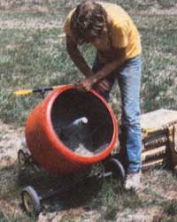
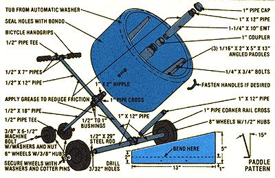

Here's a shop project that's sure to save you time and money:
If you're a regular reader of this publication, chances are you do a lot of your own work around the home or farmstead . . . including, perhaps, an occasional job that requires stirring up small batches of concrete. Naturally, it wouldn't pay to purchase an expensive cement mixer just to whip up a bucket-sized "recipe" now and then. However, it would make sense to build your own mortarmaker from junkpile scrap . . . especially if the device could handle most of your casual chores and still cost only a few dollars to make.
MOTHER's hand-operated concrete mixer is nothing more than a discarded Kenmore washing machine tub fitted out with three paddle blades and mounted on a sturdy, wheel-equipped iron pipe frame. But don't think for a minute that-just because the "tumbler" is made from discarded parts-it's a second-class piece of equipment. On the contrary, we've discovered that our homebuilt machine is every bit as versatile as are the available store-bought manual mixers (some of which, by the way, carry price tags as high as $100! ), and is just as easy to use, as well!
You should be able to construct the entire gadget in an hour or two (depending on your degree of mechanical skill) using only a pipe wrench, a drill with 3/32" and 1/4" bits, a screwdriver, a hacksaw, and an adjustable wrench. You'll also, of course, have to gather together all the materials shown in the accompanying il lustration, including a quart or so of auto body putty (or "bondo" ).
Start the project by fabricating the three in-the-drum paddles that will do the blending. If you're fortunate-as we were-you'll be able to find some brackets, corner supports, or angleiron scrap that can simply be trimmed and mounted with a minimum of fuss. If not, however, you'll have to cut the blades from 18gauge sheet metal (using our diagram as a guide), bend them (see MOTHER NO. 56, page 144 for information on how to build an inexpensive bending brake), and drill two 1/4" holes in each section. Then bore matching holes in the tub and secure the agitators in position, using 1/4" bolts. Once that's done, you can also liberally apply bondo to the bottom and sides of the vessel's interior . . . to seal its holes.
Next, assemble the iron pipe frame (we used galvanized Schedule 40 stock) by merely threading the pieces together. Mount the smaller (rear) rollers-by sliding a bolt through the disks and tee fitting and fastening it with a nut-and attach the main wheels as well. (To be sure the large hubs are held securely in place, first slip the axle shaft through its tubular housing and put on the wheels and washers. Now, mark and drill the cotter pin holes as close as possible to the disks, to prevent the shaft from having excessive end play and wobble, then grease the axle and secure the whole assembly with two cotter pins.)
The mixing drum rotates on the shaft fastened to the central pipe cross, and is bushed with a section of electrical metallic tubing (EMT). Grease the pipe "axle", slip the conduit over that, and lubricate the assembly yet again. Then slide the tub over the shaft and thread on the pipe cap to hold the components in place. (It would be a good idea to put some lubricant on the frame's "spine" bar-at the points where it contacts the vat-to aid the rotation process.)
Finally, you can paint the assembly if you wish, and-once you attach a set of bicycle grips to the handles-your "minimixer" will be ready to use! We've found that our little machine can hold one full 40-pound bag of ready-mix without any problem. For most people, it's easy enough just to grab the rim of the tub and pull it-hand over hand-in order to stir up the "mud". (Hint: Rotate the drum in the correct direction . . . the angled paddle blades should bite into the gritty substance and then drop it from the top of the vat.) Of course, if you wish, you can attach handles to the outside of the drum-opposite each paddle-by using longer 1/4" bolts to secure the "mixers". (Be certain that your grips clear all parts of the frame during rotation.)
In any case, this simple piece of equipment is well worth the ten dollars or so (and the hour or two) required to assemble it. And-if you hose the drum out thoroughly after each job-you'll have a trouble-free tool for years to come!
|
 |
 |
|